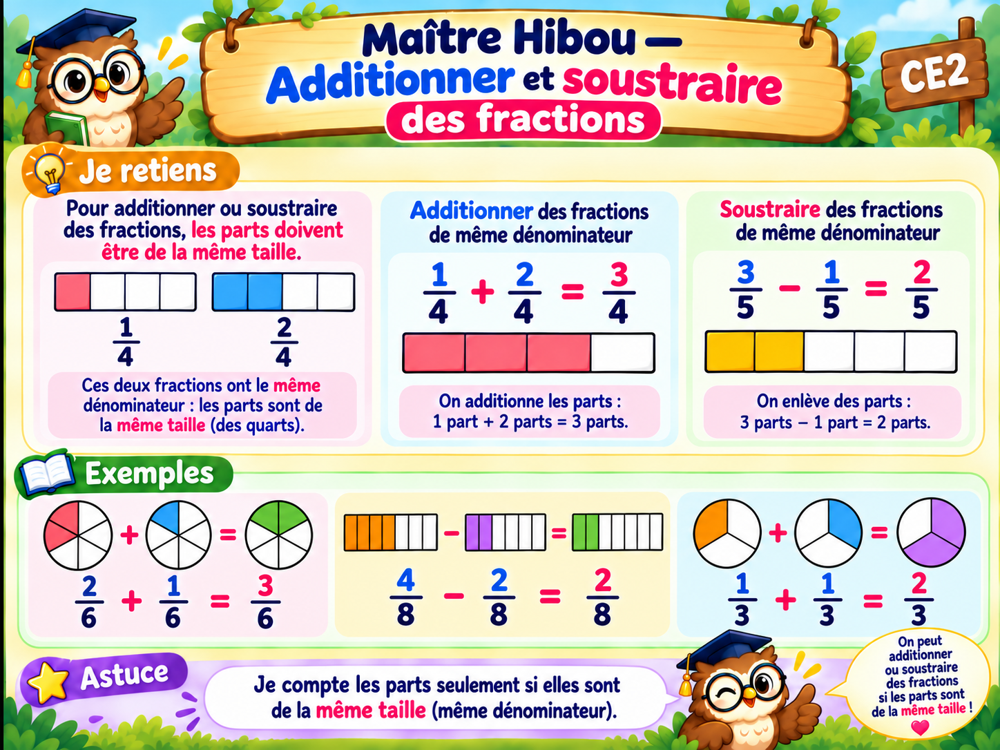

À toi de jouer !
10 questions. Vérifie ta réponse avant de passer à la suivante.
Bravo ! Tu as réussi les 10 questions.
Tu peux maintenant valider ta leçon.
Cette règle fonctionne ici seulement pour des fractions de même dénominateur.

10 questions. Vérifie ta réponse avant de passer à la suivante.
Tu peux maintenant valider ta leçon.